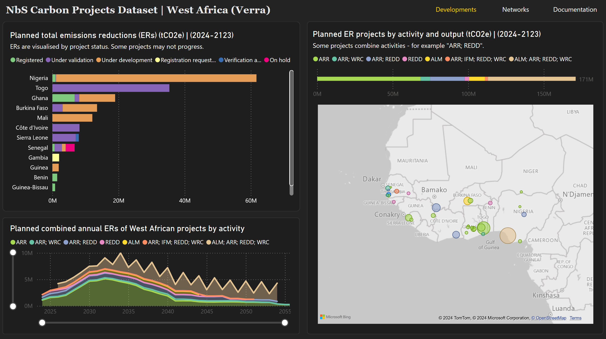

Compiled by Sam MacKinnon
Sources: The Verra Registry is the primary source and the data is provided by the project developers on the registry. The "Data Acquisition Date" field in the dataset lists how current each row of data is.
This dataset is simply a compilation of disaggregated data hosted by Verra and combines the following information: first, data downloaded using Verra's bulk export tool; second, data scraped from the Verra Registry project listings pages to add missing summary fields; third, information about emissions reductions, project developers and locations extracted from PDF documents, spreadsheets or spatial datasets authored by the project developers or proponents and hosted on the registry.
Another source (Karnik et al., 2024) was used to get project locations for registered projects (this dataset of project locations was also created using information hosted on the Verra Registry). Websites and social media pages were used to find the entity type of organisations. The NbS Carbon Projects Dataset only covers West Africa for now.
The NbS Carbon Projects Dataset compiles high-level information about nature-based solutions (NbS) carbon offsetting projects in West Africa, with the aim to identify macro-trends in the emerging carbon offsetting sector in the region. The intention of compiling the dataset is to provide resources to analyse the future trajectory of this emerging development sector on a national and regional basis and to facilitate links to other fields of research, such as political economy.
Data of this kind can help to identify national investment trends, the organisational and geographic networks that are forming, and aid the study of how public policy, economics, security and environmental risk encourages or inhibits sectoral growth and creates patterns of uneven development.
This first version of the dataset covers Verra projects in West Africa for the period 2024-2123. Future updates will include data from more registries, regions (with full coverage of Africa the current priority), implement country-level dashboards and analysis, and include historical data. As a first release, it may have flaws, and I appreciate your feedback to improve the resource – you can contact me here if you spot any problems or if you would like to be involved.
Read the project notes below to understand how the dataset was compiled and its intended purpose.
The dateset includes the following fields:
Data Acquisition Date, Registry, Project ID, Project Summary, Region, Country, Longitude, Latitude, Geosource, Project Name, Number of Proponents, Lead Proponent, Lead Proponent Country, Lead Proponent Region, Lead Proponent Entity, Secondary Proponent, Secondary Proponent Country, Secondary Proponent Region, Secondary Proponent Entity, Tertiary Proponent, Tertiary Proponent Country, Tertiary Proponent Region, Tertiary Proponent Entity, Project Type, AFOLU Activities, Methodology, Status, Estimated Annual Emission Reductions, Project Registration Date, Crediting Period Start Date, Crediting Period End Date, Hectares, Auditor, Total ERs, ERs by Year
The dataset and dashboard uses Verra's abbreviations for project activities:
ARR: Afforestation, Reforestation, and Revegetation
WRC: Wetlands Restoration and Conservation
REDD: Reduced Emissions from Deforestation and Degradation
ALM: Improved Agricultural Land Management
IFM: Improved Forest Management
The process is quite simple, just more laborious than it ought to be due to the fragmented information system on Verra. Estimates on emissions reductions are buried in project design documents submitted and hosted on Verra as PDFs. (Rarely do projects supply the tables as spreadsheets.) Extracting tables from PDFs is not a smooth experience; in order to increase the efficiency of this, the relevant pages from the PDFs were isolated and Anthropics's Claude 3.5 Sonnet large-language model (LLM) was used to read and convert the data into a format suitable for spreadsheets. The LLM was fast at performing this task and accurate – the outputs were reviewed to ensure accuracy.
Once the emissions reductions data was compiled it was paired with basic information available through Verra's bulk export feature. All African projects under "Agriculture, Forestry and Other Land Use" were bulk exported from the Verra Registry search page. West African states were isolated from the dataset.
Verra does not include all project summary information available on the dedicated project listings pages on the registry in the bulk export feature – such as the number of hectares involved in the project, the auditor, the number of proponents, and the origin of the project proponents by home country, or the summary description of the project. These were scraped from the project listings pages and added to the table.
Verra also does not include coordinate locations for the projects. To obtain the latitude and longitude, therefore, an open dataset by Karnik et al., 2024 that covers already registered projects was used, while the remaining projects were filled in by using geospatial datasets provided by the projects to Verra or by searching inside the project design documents for coordinates in cases where geospatial datasets were not provided.
In cases where there are more than one project proponent, Verra lists "multiple proponents" under the "project proponent" section instead of providing their names and origin countries. This data must be obtained from the provided project design documents. For simplicity – as the ownership and benefit structures of projects are not known and, therefore, project outputs cannot be disaggregated easily among the multiple proponents – the dashboard selects a single project proponent to represent the project, assuming that there is a lead proponent. The lead proponent in this case is the first listed entity in the "Project Proponents" section of the project design documents. Their country of origin is also extracted. In the dataset, secondary and tertiary proponents are included.
Verra also does not include explicit information on the entity type of project proponents, that is, whether they are a for-profit private company, a non-governmental organisation (NGO) or a governmental organisation. This information is obtained, where it is not obvious or identifiable in the project design documents, from a simple web search for organisational websites or social media pages.
The dataset currently only includes Verra projects. In the future, projects from registries such as Gold Standard and Plan Vivo will be added. Also, only forecasts are included; historical data will be added in the future.
New regions will be added to the dataset, with the current priority full coverage of Africa. Country-level dashboards will also be included.
Project status and project activity categories, currently taken exactly as they are listed from the registry database, may be replaced by higher-level abstractions. For example, where there are several activities in a project, the category may become "Mixed". Also, where registries differ in their terminology for activities or project status, abstractions may be required to unify them in the dataset.
Some caution ought to be exercised when using this data. Pay attention to the project status; projects "under development", for instance, may not progress and could fail to pass the tests necessary to become registered projects that can generate offsets. Even those projects that become registered face risks (mismanagement, environmental, political, social or financial) that, if left unmitigated, may result in projects partly or wholly failing and, therefore, not generating the planned emissions reductions. That said, usually those projects which succeed in passing validation should not experience such outcomes due to the strict tests they must first pass and the risk mitigation plans they should have in place.
Moreover, the emissions reductions data is based on a model of the future offsets resulting from the protected or restored ecosystems and the final results will differ. The actual emissions reductions will be confirmed through future monitoring events, which typically occur every 3 of 5 years following the start of a project. The models used are based on emprical research and provide the best estimate of the output of a project and, considered together, the possible supply of emissions reductions coming from each state or the region as a whole.
The purpose of this dataset is to aid in understanding the current activity in the NbS carbon sector: where it is geographically concentrated, the spatial networks of organisations being formed, and to draw connections between national contexts and carbon project developments (or lack thereof) that are unfolding. (This last point will require using the data alongside other datasets or resources.) The scale of projects, even if there is uncertainty as to whether they will progress, is an important indicator of investment trends, the kind of supply of emissions reductions we can expect in the future, the organisations or organisation types that will be key players in the future, and in what states the NbS carbon sector is growing more rapidly.
It is important to keep the dataset current, for users to do their own checks, to track non-progression of projects or for differences in predicted and actual emissions reductions, and to adjust the results accordingly. Equally as important as tracking positive outcomes is tracking negative ones; if trends emerge in terms of project failure, mismanagement or misjudgement in credit outputs, it will be important to understand the geographic, national and policy patterns influencing those outcomes.
The ultimate intention of this dataset is to provide an easier and open way to track the developments of projects across geographic contexts by unifying the disaggregated data found on the carbon project registries.
NbS carbon markets are still in their infancy, especially in West Africa. While global policy shifts and recognition of climate threats have raised the level of investment and activities in the sector, the number of active and in-development projects are small. The small number of developments can distort the rankings: some states on this list, such as Togo, host only a single project, but that project's forecasted emissions reductions are so large that it eclipses the potential outputs of most of the countries on the list that host multiple projects.
The sector should be concerned about ensuring a path to more even development across the West African region and ensuring that those states with little activity can see more investments. There should also be concern about ensuring that national carbon project development networks are not dominated by single projects or developers, and that the risk exposure is therefore more evenly spread in the event that those projects may come under strain.
As the regional NbS carbon sector matures and more projects come online, we may see an evening-out of activity across states as developers seek unexplored opportunities, or if governments attempt to create stronger business environments for carbon projects or, indeed, fill the gaps in private investment by setting up public carbon projects. On the other hand, the political-economic, environmental or security situation in some states may not improve or even decline, discouraging the development of projects.